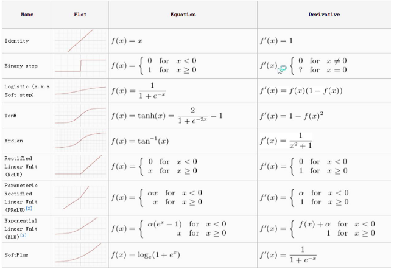
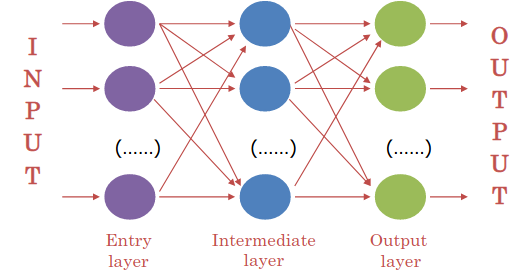
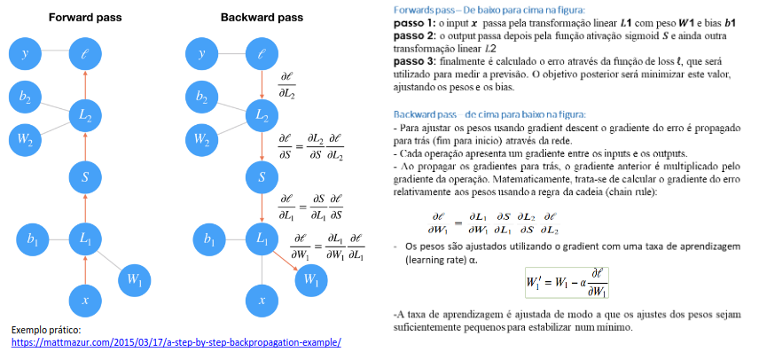

Redes Neuronais Artificiais
- São modelos de machine learning que funcionam de forma análoga ao cérebro humano. É um processador paralelo composto por nodos de processamento singulares (neurónios);
- O conhecimento é guardado em conexões entre os neurónios;
- O conhecimento é obtido de um ambiente (dados), através de um processo de aprendizagem (algoritmo de treino) que ajustam os parâmetros da rede;
Benefícios/Razões para o Sucesso
- Aprendizagem/Generalização: permite a obtenção de novo conhecimento do ambiente;
- Processamento paralelo massivo: permite que tarefas complexas sejam efetuadas num curto espaço de tempo;
- Não linear: útil para muitos problemas reais;
- Adaptabilidade: podem adaptar a sua topologia de acordo com as mudanças no ambiente;
- Robustez e degradação suave: disponível para ignorar ruído e atributos irrelevantes, capaz de lidar com informação em falta de forma eficiente;
- Flexibilidade: tem um grande domínio de aplicabilidade;
- Usabilidade: pode ser utilizada como "black boxes", não precisa de conhecimento explícito acerca da função a aprender.
Tipos Comuns de Aplicação
- Memória Associativa;
- Classificação/Diagnóstico;
- Reconhecimento de padrões;
- Regressão;
- Controlo;
- Otimização;
- Filtragem de dados/compressão;
- etc...
Neurónios Artificiais
- Recebem um conjunto de inputs, dados ou conexões (\( x_i \));
- Têm um peso (valor numérico) associado a cada conexão (\( w_i \));
- Cada neurónio calcula a sua ativação baseado nos valores de input e dos pesos das conexões;
- O sinal calculado é passado para o output após ser filtrada pela função de ativação (\( f() \)).

Funções de Ativação
- Sigmoid/Logística;
- Linear;
- Tangente hiperbólica (Tanh);
- Gaussiana;
- ReIU (linear rectified).

Arquiteturas de Redes (topologias)
- Forma como os nodos se encontram interconectados numa rede estruturada;
- Existem múltiplos tipos de arquiteturas, cada uma com o seu próprio potencial, tendo duas categorias: supervisionadas e não supervisionadas.
Topologia Feedforward
- Multilayer Perceptron (MLP) - Feedforward totalmente conectado numa rede neuronal com múltiplas camadas intermédias.

Problemas de Classificação
Se usarmos modelos funcionais para para problemas de classificação, então teremos de converter os outputs do modelo (valores numéricos) nos valores desejados pelo atributo de output (nominais), isto é, em classes expectáveis.
Podemos escolher entre duas hipóteses: um neurónio a dividir o domínio ou 1-of-C/one-hot encoding.
No último aso, teremos \( M \) outputs numéricos (1 por classe) e a classe correspondente ao maior valor é, geralmente, escolhida.
Neste caso, facilmente calculamos as probabilidades para cada classe (função softmax).
Treino
Dados: exemplos de treino que consistem em inputs e nos seus outputs desejáveis;
Objetivo: arranjar os pesos das conexões de forma a minimizar a perda de cada função: no caso dos ANNs é a generalização do custo da função de regressão logística.
Existem múltiplos algoritmos de treino baseados no descending gradient:
- O mais usado é a backpropagation;
- Outros: Marquardt-Levenberg, Rprop, Quickprop, etc...
Algoritmo de Backpropagation
- Baseado no vetor gradiente da superfície de erro que define a direção do maximum descent - método semelhante ao descendente do gradiente;
- Parâmetro importante: taxa de aprendizagem que define a distância qe um algoritmo anda;
- A sequência destes movimentos lidam a um mínimo (no melhor caso, global);
- Execuções do treino para um dado número de epochs: define o número de vezes que cada caso é treinado pela rede, sendo que os exemplos tipicamente são divididos em batches (subconjuntos de exemplos);
- Configuração inicial da rede é, geralmente, gerada de forma aleatória;
- Critério de Paragem: número fixo de epochs, tempo e critério de convergência baseado num subconjunto de exemplos de validação.
Fases
- Forward Propagation: calcula o valor de output para o vetor de input e o erro cometido;
- Backpropagation: dado o erro cometido, este é propagado para trás, ajustando os pesos das conexões da direção do seu decréscimo. É baseado no cálculo do gradiente utilizando a regra em cadeia para funções compostas.

Suma
- Embora existam muitas variantes de redes neuronais, cada uma pode ser definida em termos de:
- Função de ativação: transforma o input da rede de um nodo num único sinal de output que será propagado para a frente na rede;
- Arquitetura de Rede ou topologia: descreve o número de nodos do modelo e o número de camada e a forma como elas estão conectadas;
- Algoritmo de Treino: especifica como é que os pesos das conexões são definidos de forma a inibir ou excitar neurónios em proporção com o sinal de input.
Escolha da topologia para feedforward ANN/hiperparâmetros
- Quando nodos de input e output?
- Quantas camadas e nodos intermédios?
- Como conectar os neurónios?
- Conexões mais curtas?
- Modelo mais simples: Feedforward Networks with fully interconnected layers (MLP).
Arquitetura da Rede (Topologia)
- A capacidade da rede neuronal aprender é baseada na sua arquitetura ou em padrões e estruturas de neurónios interconectados;
- Determina a complexidade das tarefas que podem ser aprendidas pela rede;
- Geralmente, redes mais largas e complexas são capazes de identificar padrões mais súbtis e limites de decisões complexas;
- No entanto, o poder da rede não é apenas em função do seu tamanho, mas sim da maneira que as suas unidades estão colocadas.
- Número de camadas;
- Direção do flow de informação;
- Número de nodos em cada camada da rede.
- O número de camadas escondidas, tipicamente:
- 1 camada tem capacidade para aproximar qualquer área de decisão linear (semiplano);
- 2 camadas aproximam qualquer área de decisão contínua (regiões convexas);
- 3 camadas aproximam qualquer área de decisão (regiões arbitrárias).
Número de Nodos em cada Camada
- O número de nodos de input é pré-determinado pelo número de atributos dos dados de input;
- O número de nodos de output é pré-determinado pelo número de resultados que devem ser modelados ou pelo número de classes no resultado;
- O número de nodos escondidos é deixado a escolher ao utilizador antes de treinar o modelo, não havendo qualquer regra fiável para definir o número de neurónios na camada escondida:
- Um grande número de neurónios terá tendência a deixar os resultados muito semelhantes aos dados de treino, correndo o risco de overfitting, ou seja, pode generalizar mal para dados desconhecidos;
- Redes neuronais grandes também podem ser computacionalmente caras e lentas para treinar;
- Um número pequeno de neurónios pode não ser suficiente para modelar a área de decisão pretendida;
- Devem ser testados os valores de neurónios entre metade e o dobro dos neurónios presentes na camada de input;
- Devemos utilizar o modelo que tenha menos nodos e resulte num desempenho adequado num dataset de validação.
Generalização/Overfitting
- Overtraining uma ANN pode prevenir a generalização por overfitting. A ANN memorizará os casos de treino e não as regras de generalização, o treino pode ser parado mais cedo;
- A regularização pode ser usada de forma semelhante à regressão logística/linear;
- A probabilidade de overfitting aumenta se:
- Tivermos poucos casos de treino (qualidade das amostras);
- Tivermos demasiadas conexões (complexidade da rede).
Training Process "A Better Model"
Underfitting
Este modelo falha na complexidade necessária para capturar corretamente a complexidade inerente ao problema que se pretende resolver. Podemos reconhecer esta situação quando o erro é demasiado grande, tanto nos casos de treino e nos casos de (validação) teste.
Overfitting
Este modelo utiliza demasiados parâmetros e foi treinado em demasia.
Especificamente, aprendeu a identificar qualquer caso no conjunto de treino, tornando-se tão específica que não é capaz de generalizar para imagens semelhantes. Podemos reconhecer esta situação quando o erro nos casos de treino é muito menor que os casos de teste.
Medidas para reduzir o overfitting:
- Adicionar mais casos ao conjunto de treinos;
- Utilizar arquiteturas que demonstraram generalizar bem;
- Reduzir a complexidade da arquitetura de rede;
- Usar data augmentation;
- Adicionar normalização (Batch Normalization Layer);
- Adicionar dropout (Dropout Layer).
Training Process "Learning Curves"
- Um modelo que esteja em underfit que não tenha capacidade suficiente pode ser demonstrado como uma linha reta ou valores de ruída de uma perda relativamente grande, indicando que o modelo não foi capaz de aprender o dataset.
- Adicionar mais observações: podemos não ter dados suficientes para os padrões existentes terem sinais fortes;
- Adicionar mais atributos: ocasionalmente, este modelo está em underfit, porque os atributos são insuficientes;
- Reduzir a regularização do modelo: se tivermos parâmetros de regularização explícitos, devemos remover ou reduzir esses parâmetros;
- Aumento da capacidade do modelo: a capacidade do modelo pode não ser suficientemente grande para capturar ou aprender sinais existentes.
- Um modelo que esteja em underfit que precisa de mais treino pode ser demonstrado como um perda de treino que vai diminuindo até ao fim do gráfico. Isto indica que o modelo é capaz de aprender mais e melhores e o processo de treino foi parado prematuramente.
- Aumentar o número de epochs: até a curva de validação para de melhorar. É uma boa altura para aumentar muito o número de epochs e adicionar uma paragem early de forma a identificar quantos epochs são requeridos;
- Se estiver a demorar demasiado tempo para chegar ao mínimo para a curva de validação, devemos aumentar a taxa de aprendizagem para aumentar a travessia e adicionar um callback para ajustar, de forma automática, a taxa de aprendizagem.
- Um exemplo de um modelo em overfit pode ser demonstrado por um ponto de inflexão na validation loss que pode ser o ponto no qual se pode parar a experiência, visto ter demonstrado as dinâmicas do overfitting.
- Regulariza o quão rápido um modelo aprende ao reduzir a sua taxa de aprendizagem. Adiciona um callback para, de forma automática, reduzir a taxa de aprendizagem como a validation loss plateaus;
- Regulariza a capacidade do modelo de reduzir o número e/ou o tamanho das camadas escondidas;
- Regulariza os pesos de forma a controlar a complexidade da rede;
- Regulariza os padrões de ocorrência adicionar um dropout de forma a minimizar a chance de encontrar padrões que encaixem e gerem ruído nos dados.
- Um dataset de treino pode ser muito pequeno relativamente ao seu dataset de validação, esta situação pode ser identificada através de uma curva de aprendizagem para perda de treino que demonstra uma melhoria e uma semelhança com a curva de aprendizagem para validation loss que apresenta melhora, mas uma grande gap mantém-se entre as curvas.
- Adicionar mais observações: podemos não ter dados suficientes para capturar padrões presentes tanto nos dados de treino, como de validação;
- Devemos garantir que estamos a selecionar opções de sampling de forma aleatória para utilizarmos nos conjuntos de treino e de validação. Se os dados estiverem ordenados por algum atributo então os dados a validar podem ter atributos não representados nos dados de treino;
- Fazer cross-validation de forma a fazer com que todos os dados tenham a oportunidade de ser representados tanto nos conjuntos de treino e de validação.
- Um dataset de validação que possa ser demasiado pequeno relativamente aos dados de treino pode ser demonstrado por uma curva de aprendizagem para training loss que aparenta ser um bom fit e uma curva de aprendizagem para validation loss que mostra movimentos de ruído à volta da training loss.
- Adicionar mais observações ao dataset de validação;
- Se estivermos num número limitado de observações, devemos fazer cross-validation de forma a que todos os dados tenham oportunidade de serem representados nos conjuntos de treino e de validação.
- Um conjunto de validação que seja mais fácil de prever que o conjunto de dados de treino pode ser identificado pela validation loss que é menor que a training loss.
- Verificar que não se tem observações duplicadas entre os datasets de treino e de validação;
- Verificar que não existe fuga de informação entre os datasets de treino e de validação;
- Verificar que se estão a escolher amostras aleatórios, para que a variância dos atributos seja consistente em ambos os conjuntos;
- Fazer cross-validation de forma a fazer com que todos os dados tenham a oportunidade de ser representados tanto nos conjuntos de treino e de validação.
Redes Neuronais Artificiais
- Pontos Fortes:
- A accuracy de problemas de classificação é geralmente elevada para problemas complexos;
- Processamento distribuído, o conhecimento é distribuído pelos pesos das conexões;
- Robusto a lidar com exemplos, mesmo que estes contenham erros;
- Lida bem com atributos redundantes, desde que o peso associado a eles seja pequeno;
- Resultados podem ser discretos, valores reais ou um vetor de valores (discretos ou reais).
- Pontos Fracos:
- Dificuldade em determinar a topologia de rede ótima para um problema;
- Dificuldade para usar, pois tem muitos parâmetros para definir;
- Precisa de pré-processamento específico de dados;
- Precisa de muito tempo para treino;
- Dificuldade a aprender a função de aprendizagem (pesos);
- Conhecimento descoberto não pode ser lido;
- Não providencia explicações para os resultados;
- A incorporação do domínio de conhecimento não é fácil.
Frameworks
- Componentes fundamentais em qualquer framework DL:
- The Tensor Object;
- Operações no Tensor Object;
- Computação e otimização de grafos;
- Ferramentas de diferenciação automática;
- Extensões BLAS/cuBLAS e cuDNN.